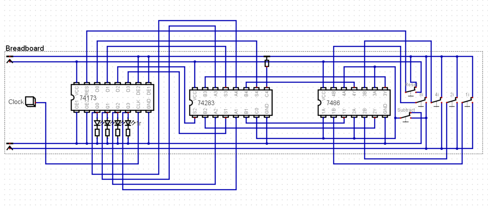

Components
- 74LS173 (4-bit register) chip
- 74LS283 (4-bit adder) chip
- 74LS86 (Quad XOR) chip
- Four switch array, two individual switches
- Four 1kΩ resistors
- Four LEDs
- Push button switch
- 555 timer chip
- 0.1 µF capacitor
- Various wires
Demonstration:
Find simple adding and subtracting video here